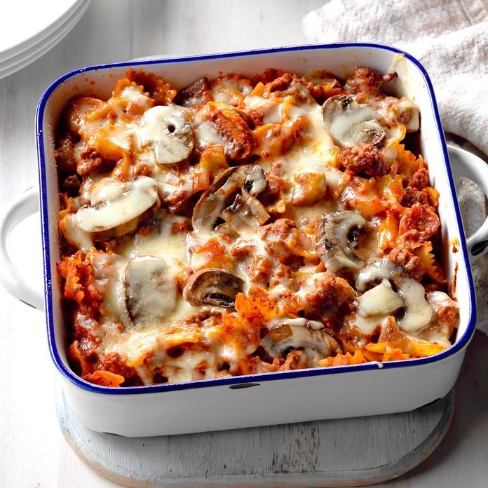

Italian Hotdish

Description
Kind of a nice health option with it use of mushroom an pepper for a quality delicious meal.
Ingredients
- 1-1/2 cups uncooked multigrain bow tie pasta (about 4 ounces)
- 1 pound lean ground beef (90% lean)
- 1 cup sliced fresh mushrooms, divided
- 1/2 cup chopped onion
- 1/2 cup chopped green pepper
- 1 teaspoon dried oregano
- 1/2 teaspoon garlic powder
- 1/4 teaspoon onion powder
- 1/8 teaspoon pepper
- 1 can (15 ounces) tomato sauce
- 1/2 cup shredded part-skim mozzarella cheese, divided
- 2 tablespoons grated Parmesan cheese, divided
Steps
- Preheat oven to 350 degrees.
- Cook the pasta according to package direction for al dente.
- When pasta is done cooking drain excess water.
- In a large skillet coated with cooking spray, cook and crumble beef with 1/2 cup mushrooms, onion and green pepper over medium-high heat until meat is no longer pink (about 5-7 minutes).
- When meat is cooked stir in seasonings and tomato sauce.
- Bring your sauce to a boil, then reduce heat to simmer with cover for about 15 minutes.
- Place pasta in an 8-in. square baking dish coated with cooking spray. Top with the sauce and remaining mushrooms.
- Sprinkle with 1/4 cup mozzarella cheese and 1 tabelspoon Parmesan cheese.
- While covered, bake for 35 minutes. Then uncover and sprinkle remaining cheeses.
- Bake until heated through and cheese is melted (about 5-10 minutes).